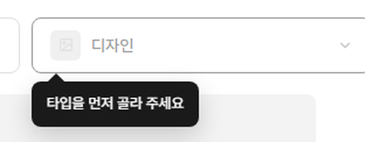
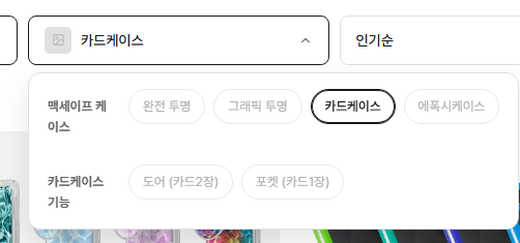

노페일디자인 → (주)쏭스디자인 대표님
필터 개편 — 무엇을 하고,
누가 하고, 얼마가 드는지
보내주신 「쏭스스토어 메뉴정리」대로 필터를 만들려면 화면만 바꿔서는 안 되고 상품 정보도 같이 바꿔야 합니다. 화면은 저희가 만들었습니다. 상품 정보는 쇼핑몰 안에 있어서 쏭스 쪽에서 손을 대야 합니다. 그 일이 얼마나 되는지를 실제 상품 1,938개를 세어 보고 정리했습니다.
화면은 다 만들어 뒀습니다. 보내주신 필터 그대로 눌러 볼 수 있습니다. 남은 일은 그 화면이 읽을 상품 정보를 채우는 것입니다.
상품 정보를 손으로 다 고치면 약 80시간입니다. 하루 3시간씩 꼬박 해도 한 달 가까이 걸립니다. 그동안 신상품 등록은 밀립니다.
저희가 변환 파일을 만들어 드리면 약 13시간으로 줄어듭니다. 쏭스 쪽은 사람이 꼭 봐야 하는 625개만 판단하고 올리기만 하면 됩니다.
손으로 하면 반드시 틀립니다. 추측이 아니라 지금 쇼핑몰이 그 증거입니다. 같은 뜻의 분류가 두 군데 있는데 이미 19개가 서로 어긋나 있습니다.
한 번만 정리하면 다음부터는 쉬워집니다. 아이폰 18이 나와도 대표님이 직접 추가할 수 있게 만듭니다. 개발자를 다시 부를 필요가 없습니다.
상품 1,938개를 하나씩
사람이 볼 것만 보고 올리기
한 달 → 닷새
나머지는 기계가 정합니다
무엇을 바꾸는 겁니까
지금 필터는 「기종」·「테마」·「가격」이 서로 상관없이 나란히 있습니다. 보내주신 안은 위를 고르면 아래가 정해지는 방식입니다. 케이스에서 「맥세이프」를 고르면 맥세이프용 디자인만, 그중 「카드케이스」를 고르면 그 기능만 나옵니다.

순서를 건너뛸 수 없습니다

맥세이프용 4개만 보입니다

그 기능 줄이 새로 나옵니다
직접 눌러 보실 수 있습니다 → 와이어프레임 v6
왜 상품 정보까지 건드려야 합니까
필터는 상품에 적혀 있는 것만 보여 줄 수 있습니다. 「카드 2장」이라는 버튼을 만들어도, 상품에 카드가 몇 장인지 안 적혀 있으면 버튼을 눌러도 아무것도 안 나옵니다.
보내주신 필터를 전부 만들려면 상품마다 적어 둬야 하는 것이 35가지입니다. 1,938개를 전부 열어 세어 봤습니다.
자세한 내용은 따로 정리해 뒀습니다
35가지를 하나씩 어떻게 확인했는지, 분류와 옵션을 어떻게 바꾸는지는 기술 정리 문서에 있습니다. 이 문서는 무엇을·누가·얼마에만 다룹니다.
누가 무엇을 합니까
화면과 프로그램은 저희가, 상품 정보는 쏭스가 합니다. 상품 정보는 쇼핑몰 관리자 안에 있어서 운영하시는 분만 손댈 수 있습니다. 다만 손이 제일 많이 가는 부분은 저희가 파일로 만들어 드릴 수 있습니다(§5).
- 필터 화면 디자인과 개발보내주신 단계별 필터를 쇼핑몰에 얹습니다
- 분류·옵션을 읽어서 거르는 기능상품명이 아니라 분류와 옵션을 읽습니다
- 상품 정보 변환 파일 제작지금 분류를 보고 새 분류를 자동으로 정해 주는 엑셀. 이게 §5의 절감분입니다
- 대표님이 직접 필터를 늘릴 수 있는 구조아이폰 18이 나와도 저희를 다시 부르지 않게
- 상품등록 화면 개선컨펌 대기등록할 때 빠뜨리지 않도록 칸을 정리합니다
- 올린 뒤 검수필터를 다 눌러 보며 빠진 상품이 없는지 확인
- 정해 주셔야 하는 것§9의 질문들. 이게 먼저 정해져야 나머지가 돌아갑니다
- 사람이 봐야 하는 625개 판단카드가 몇 장인지(437개), 분류가 안 달린 상품(188개)
- 엑셀 올리기저희가 드린 파일을 관리자에 올립니다
- 분류 정리 승인지금 중복된 분류를 숨기거나 지우는 일
- 앞으로 상품 올릴 때분류와 옵션을 고르는 칸이 늘어납니다
쏭스 쪽 일이 얼마나 됩니까
실제로 센 숫자입니다. 어림이 아닙니다.
| 해야 하는 일 | 상품 수 | 왜 필요한가 |
|---|---|---|
| 중복된 분류 정리 | 1,142 | 같은 상품이 「폰 케이스」 밑에도, 「맥세이프」 밑에도 들어가 있습니다. 둘 다 세면 상품 수가 두 배로 나옵니다 (맥세이프 612 + 맥세이프 제품 530) |
| 큰 분류 빠진 것 채우기 | 728 | 작은 분류에는 들어 있는데 큰 분류에는 체크가 안 돼 있습니다 (체인지톡 419, 폰 케이스 167, 이어폰 131, 카드지갑 11) |
| 분류를 새 구조로 옮기기 | 1,938 | 맥세이프/일반을 한 군데서 정하도록 바꿉니다 |
| 옵션 붙이기 | 1,750 | 기능·형태·디자인을 옵션으로 넣어야 필터가 읽습니다 (케이스·카드지갑·체인지톡) |
| 카드 장수 적기 사람 판단 | 437 | 포켓·도어 상품인데 몇 장인지가 아무 데도 없습니다. 상세페이지를 봐야 압니다 |
| 분류가 안 달린 상품 사람 판단 | 188 | 케이스인지 카드지갑인지 체인지톡인지 어디에도 안 들어가 있습니다 |
| 손봐야 하는 상품 (겹치는 것 제외) | 1,938 | 판매 중인 상품 전부입니다 |
사람이 꼭 봐야 하는 것은 625개(437 + 188)입니다. 나머지는 지금 분류를 보면 새 분류가 자동으로 정해집니다 — 「폰 케이스 > 맥세이프 케이스 > 맥_투명」에 들어 있으면 새 구조에서 어디로 가는지 이미 정해져 있다는 뜻입니다. 그래서 기계가 할 수 있습니다.
두 가지 방법이 있습니다
같은 결과를 내는데 드는 시간이 다릅니다.
방법 A
관리자에서 하나씩 손으로
하루 3시간씩 하면 약 27일
- 상품 1,938개를 하나씩 열어 분류를 다시 체크하고 옵션을 입력합니다
- 건당 2분으로 잡아 64.6시간
- 사람이 판단할 625개는 화면을 오가며 보느라 건당 1.5분이 더 듭니다 (15.6시간)
- 그동안 신상품 등록·CS가 밀립니다
- 2,000번 가까이 반복하므로 빠뜨리는 상품이 반드시 생깁니다
방법 B — 권합니다
저희가 변환 파일을 만들어 드리고, 올리기만
하루 3시간씩 하면 약 5일
- 저희가 지금 분류를 읽어 새 분류·옵션을 채운 엑셀을 만들어 드립니다
- 쏭스는 사람이 봐야 하는 625개만 엑셀에서 한 줄씩 채웁니다 — 화면을 오갈 일이 없어 건당 30초 (5.2시간)
- 엑셀 올리기 8번 (500개씩 · 분류와 옵션 따로) + 검수 (8시간)
- 기계가 채운 부분은 빠뜨림이 없습니다
- 잘못되면 되돌릴 수 있습니다 — 올리기 전 파일이 그대로 남습니다
계산에 쓴 가정 — 실제와 다르면 알려 주세요, 바로 다시 계산해 드립니다
| 관리자에서 상품 1개 손보기 열기 → 분류 체크 → 옵션 입력 → 저장 | 2분 |
| 엑셀에서 한 줄 판단하기 카드 장수 등 | 30초 |
| 상세페이지를 열어 확인해야 하는 경우 추가 | 1분 30초 |
| 엑셀 한 번 올리고 검수하기 500개 단위 | 1시간 |
| 하루에 이 작업에 쓸 수 있는 시간 | 3시간 |
「건당 2분」은 익숙해진 뒤 기준입니다. 처음에는 더 걸리므로 방법 A는 80시간보다 늘어날 가능성이 큽니다. 반대로 줄어들 여지는 거의 없습니다.
돈으로 치면
시간당 얼마로 보느냐에 따라 달라지므로, 세 가지로 계산해 두었습니다. 쏭스 실제 인건비를 알려 주시면 그 값으로 다시 내어 드립니다.
| 누가 하느냐 | 시간당 | A. 손으로 (80h) | B. 변환 파일 (13h) | 아끼는 돈 |
|---|---|---|---|---|
| 아르바이트·단기 인력 | 11,000원 | 880,000원 | 143,000원 | 737,000원 |
| 운영 담당 직원 월 250만 기준 | 12,000원 | 960,000원 | 156,000원 | 804,000원 |
| 대표님이 직접 다른 일을 못 하는 값 | 40,000원 | 3,200,000원 | 520,000원 | 2,680,000원 |
줄어드는 시간
67시간
80시간 → 13시간
줄어드는 기간
22일
27일 → 5일
아끼는 돈 운영 직원 기준
약 80만원
대표님이 직접 하시면 약 268만원
돈보다 큰 것은 기간입니다. 방법 A는 거의 한 달 동안 운영 인력 한 명이 이 일에만 매달립니다. 그동안 신상품 등록과 CS가 밀리는데, 이건 위 표에 안 들어간 비용입니다.
손으로 하면 왜 틀립니까
짐작이 아닙니다. 지금 쇼핑몰이 그 증거입니다.
같은 상품이 「카드지갑 > 맥세이프 > 3카드팩 스탠딩」에도, 「맥세이프 > 맥세이프 카드지갑 > 3카드팩 스탠딩」에도 들어가 있습니다. 두 군데를 사람이 손으로 맞춰 왔다는 뜻입니다. 결과는 이렇습니다.
19개는 작아 보이지만, 필터에서는 그 19개가 조용히 사라집니다. 손님은 상품이 없다고 생각하고, 쏭스는 왜 안 팔리는지 모릅니다. 상품 1,938개를 손으로 고치면 이런 어긋남이 19개로 끝나지 않습니다.
기계로 하면 왜 안 틀리는가
사람은 2,000번을 똑같이 하지 못하지만 기계는 합니다. 그리고 올리기 전에 미리 세어 볼 수 있습니다 — 「맥세이프 케이스가 몇 개가 될 예정인지」를 올리기 전에 확인하고, 숫자가 이상하면 안 올리면 됩니다. 손으로 하면 다 끝낸 뒤에야 알 수 있습니다.
언제 끝납니까
§9의 결정이 나온 날부터입니다. 방법 B 기준입니다.
쏭스 쪽 13시간은 한 번에 몰아서 하실 필요가 없습니다. 하루 2~3시간씩 닷새면 됩니다. 그 사이 저희는 화면을 만들고 있으므로 전체 일정이 늘어나지 않습니다.
정해 주셔야 하는 것
이게 정해져야 나머지가 돌아갑니다. 전부 쏭스만 아는 내용이라 저희가 대신 정할 수 없습니다.
방법 A와 B 중 어느 쪽으로 갑니까?
B로 가면 저희가 변환 파일을 만듭니다. 쏭스 쪽 일이 80시간에서 13시간으로 줄어듭니다.
카드 장수는 누가 넣습니까?
437개 상품의 카드가 몇 장인지는 상세페이지를 봐야 압니다. 상품을 아는 분만 알 수 있어서 저희가 대신 못 합니다. 엑셀 한 칸에 숫자만 적으시면 됩니다.
폴드톡 · 미러톡 · 구슬톡을 실제로 파십니까?
보내주신 안에는 있는데 쇼핑몰에는 해당 상품이 없습니다. 앞으로 팔 계획이면 분류를 미리 만들어 두고, 아니면 필터에서 뺍니다.
「맥세이프」 대분류를 없애도 됩니까?
지금 대분류에 「맥세이프」(612개)와 「맥세이프 제품」(530개)이 따로 있고 530개는 완전히 같은 상품입니다. 새 구조에서는 할 일이 없어집니다. 다만 검색에서 그 주소로 들어오는 손님이 있을 수 있어 바로 지우지 말고 먼저 숨기는 것을 권합니다.
분류가 안 달린 상품 188개를 어떻게 할까요?
케이스인지 카드지갑인지 체인지톡인지 어디에도 안 들어가 있습니다. 지금도 분류로 찾으면 안 나오는 상품들입니다.
상품등록 화면을 정리해도 됩니까?
등록할 때 분류와 옵션을 빠뜨리지 않도록 칸을 손봅니다. 이걸 안 하면 새로 올리는 상품부터 다시 빠지기 시작합니다. 운영하시는 분이 쓰는 화면이라 먼저 여쭙습니다.
궁금한 점은 노페일디자인으로 알려 주세요. 기술적인 내용을 더 보시려면 기술 정리 문서에 전부 있습니다.